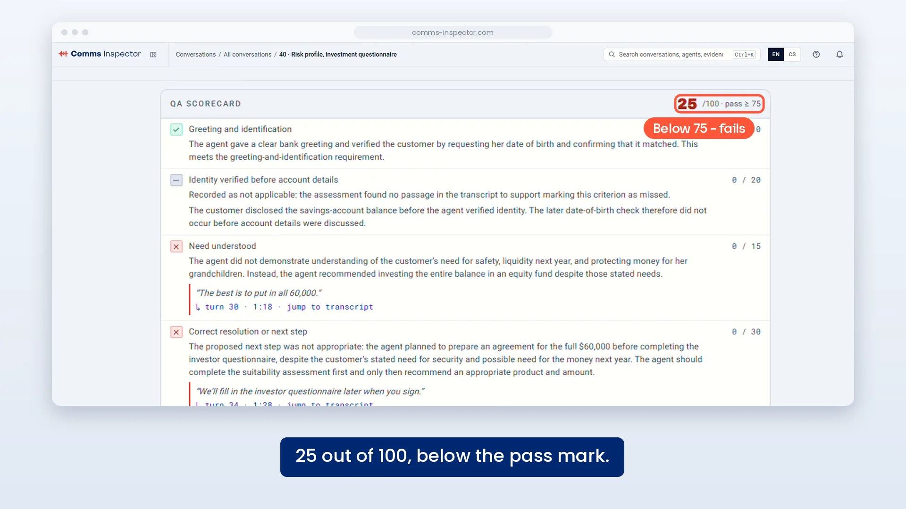

Team leads
See where the process breaks down and which conversations need attention — without listening to calls at random.
Supervises whether agents follow your sales or support process, scores conversation quality across calls and chat, and monitors performance across teams and agents.
Most contact centres check quality on a handful of calls. Watch what it looks like when every call is scored.

A scorecard you define, applied automatically, with the exact words as evidence.
Enter your work email to watch.
Want to see it on your own conversations?
Book a walkthroughAI Quality Assurance scores each conversation against your own sales or support process — across 100% of interactions, not a random sample.
See where the process breaks down and which conversations need attention — without listening to calls at random.
The same quality criteria applied to 100% of interactions, so scores are consistent across teams and over time.
Uncertain cases are surfaced for a reviewer to decide, rather than being scored on a guess.
Book a walkthrough and see how a conversation gets scored, and what a supervisor sees at the end of it.